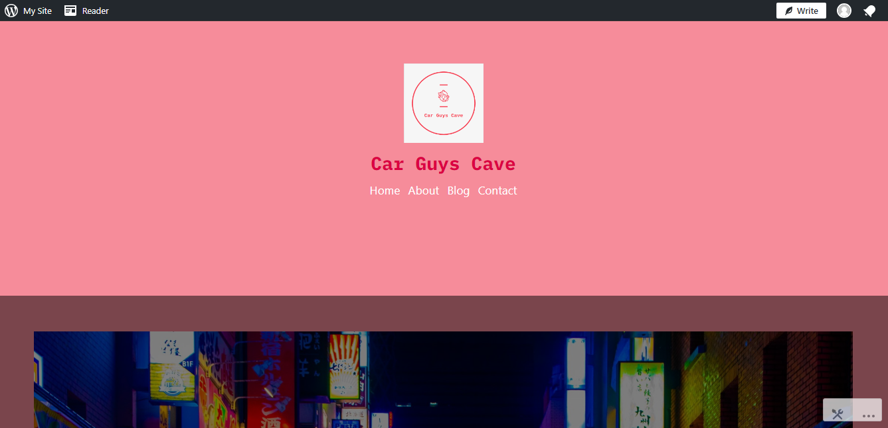
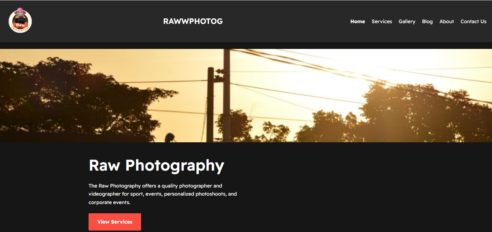
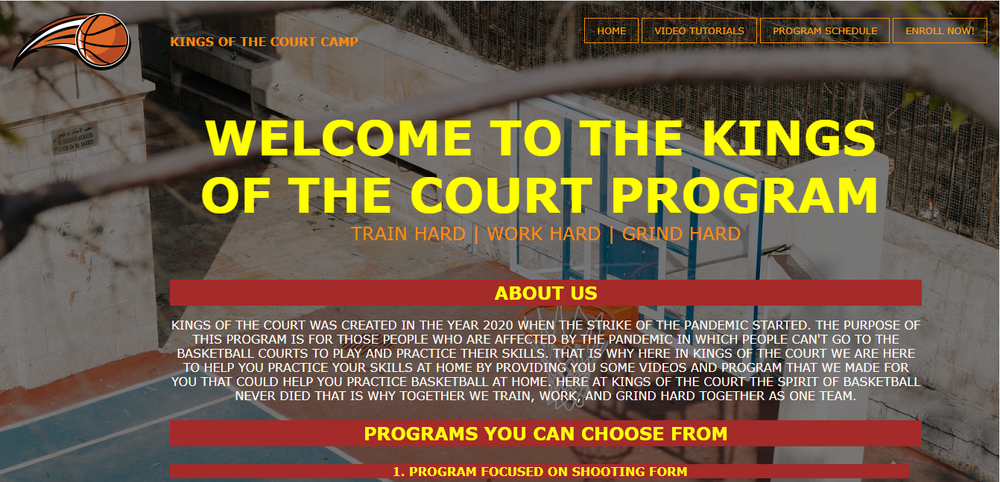
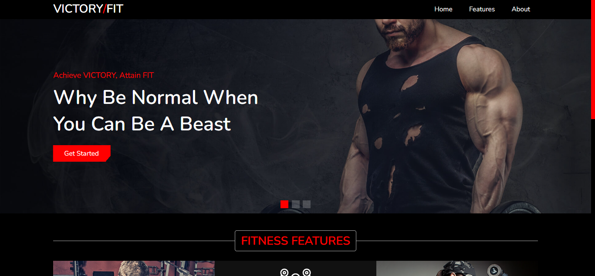
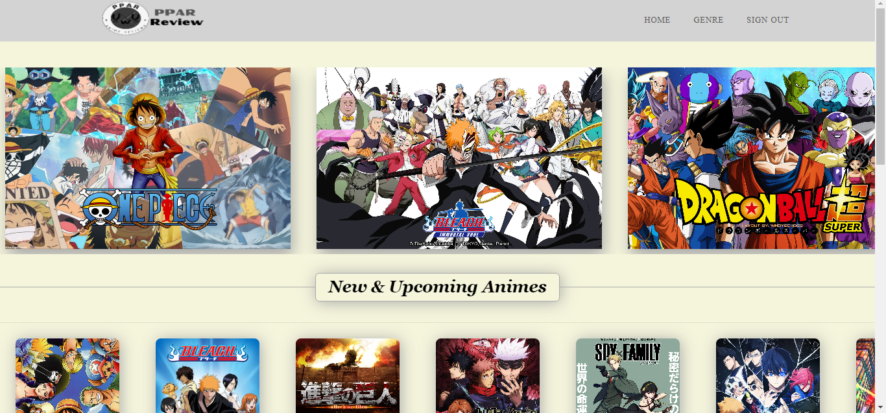

This project, created for Dynamic Web Applications and Development Tools, centers on Japanese Domestic Market cars. I share information including the car's name, history, price, and engine specifications. Developed in Wordpress, it's my first experience with the platform. Wordpress is an open-source software enabling users to easily build websites. Although initially challenging, as I designed more pages, I grew comfortable and began to enjoy using it.

This project, undertaken in the Web Search Engine Optimization and Analytics course, focuses on a photography website. We publish various photography-related blogs. Utilizing Wordpress for the second time, my role in this group project involves designing and arranging pages to enhance engagement. The aim is to boost the website's search engine ranking and increase analytics.

This project, developed under the Web Technologies subject, allows users to enroll and access basketball training from home. Coaches offer tutorials and drill schedules. Created using HTML & CSS in Visual Studio Code, it was my first website project, and despite initial difficulties due to unfamiliarity with the languages, I continue to learn new CSS properties with each new website I create.

This collaborative project merges Dynamic Web Applications, Development Tools, and Information Management, centering on a Gym website. Users can sign up, select coaches for personalized workouts and schedules, and purchase supplements from our store. Developed in Visual Studio Code, we employed HTML, CSS, PHP, and MySQL. Initially challenging, my role in the group is to enhance frontend engagement.

This project, inspired by the renowned movie rating site Rotten Tomatoes, focuses on anime ratings under the Advanced Database Systems subject. Users can rate and review anime within our selected genres after signing up. Developed in Visual Studio Code, we utilized HTML, CSS, PHP, and MySQL. My role within the group is frontend design, responsible for crafting each page.